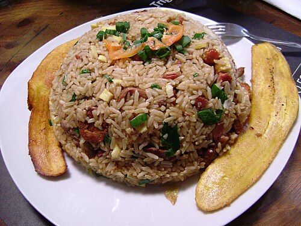

Home
Fried rice

Fried rice is a dish made by stir-frying cooked rice, typically with other ingredients like
vegetables, meat, and eggs, in a wok or frying pan. It's a popular dish across East and
Southeast Asia, often made with leftovers and customized with various additions
Ingredients
- ⅔ cup chopped baby carrots
- ½ cup frozen green peas
- 2 tablespoons vegetable oil
- 1 clove garlic
- 2 large eggs
- 3 cups leftover cooked and chilled white rice
- 1 tablespoon soy sauce, or more to taste
- 2 teaspoons sesame oil, or to taste
Steps
- Place carrots in a small saucepan and cover with water. Bring to a low boil and cook
for 3 to 5 minutes. Stir in peas, then immediately drain in a colander.
- Heat a wok over high heat. Pour in vegetable oil, then stir in carrots, peas, and
garlic; cook for about 30 seconds. Add eggs; stir quickly to scramble eggs with vegetables.
- Stir in cooked rice. Add soy sauce and toss rice to coat. Drizzle with sesame oil and toss again.